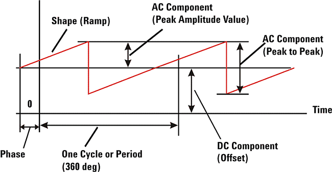
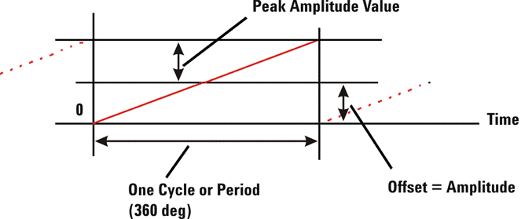
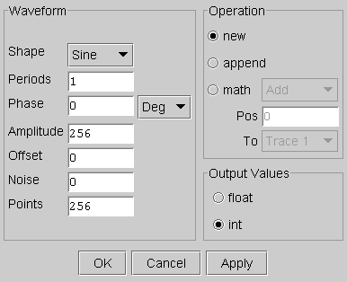

Waveform Editor
This menu item accesses the Waveform Editor used to generate commonly used periodic waveforms. A simple periodic waveform can be described by four components:
- AC component (defined by shape and amplitude)
- DC component (defined by the offset)
- Phase (defines the zero or start position)
- Number of periods (defines the number of cycles or periods)
These components are illustrated below.

The following illustration shows that you can easily generate a single one-period ramp starting at zero by specifying a phase shift of 180 degrees and the same offset as the peak amplitude value.

The Waveform Editor prompts you for the parameters shown below.

These are the Waveform parameters of the Waveform Editor:
- Shape: The shape of the waveform. Choices are:
Sine
Cosine
Square
Triangle
+Ramp
-Ramp
DcOnly
- Period: Defines how many periods of the specified waveform shape will be generated. You can enter integer or decimal values (for example 0.25). This parameter field is ignored if the selected Shape is DcOnly.
- Phase: The horizontal shift of the waveform by a portion of a period. The waveform is shifted in the negative time direction for positive values of phase. This parameter field is ignored if the selected Shape is DcOnly.
- Phase Unit: The unit of the waveform phase shift component:
Degrees (Deg),
radians (Rad), or
gradients (Grad).
- Amplitude: Defines the AC component of the waveform (the AC peak value) in linear
units.Note A linear unit is an integer number used to define the ratio between AC component, DC component, and noise.
When testing a DAC, these numbers can be downloaded to the vector memory as specified, or they can be automatically adjusted to fit the input data range (full scale) of the DAC.
When testing an ADC or buffer, the voltages of the analog waveform applied to the DUT are specified in the Analog Setup Tool.
- Offset: Defines the DC component of the waveform-the vertical shift (offset) of the waveform in linear units.
- Noise: The amplitude of the white (random) noise to be added to the waveform data points in linear units.
- Points: The number of data points in the waveform. The number must be a positive value.